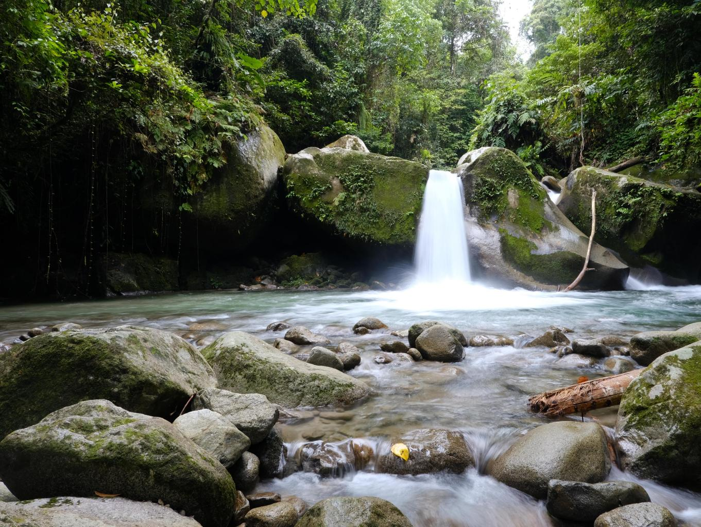

Lokasi Wisata Terbaik
Kabupaten Toli-Toli
Pulau Kapas
Pulau
Pulau tak berpenghuni dengan panorama pasir putih yang menghipnotis segala mata di Kabupaten Toli-Toli, Sulawesi Tengah.

Air Terjun Malane
Air Terjun
Air terjun yang berada diantara perbukitan, dengan pemandanga hutan hujan tropis yang memukau di Kabupaten Toli-Toli, Sulawesi Tengah.
Pulau Salando
Pulau
Hidden Gem, pulau yang menyimpan banyak keindahan bawah lautnya, pulau kecil terluar di Kabupaten Toli-Toli,Sulawesi Tengah.